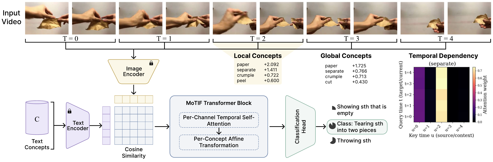

Concept Visualization: MoTIF identifies and highlights key temporal concepts in video sequences.
Abstract
Concept Bottleneck Models (CBMs) enable interpretable image classification by structuring predictions around human-understandable concepts, but extending this paradigm to video remains challenging due to the difficulty of extracting concepts and modeling them over time. In this paper, we introduce MoTIF (Moving Temporal Interpretable Framework), a transformer-based concept architecture that operates on sequences of temporally grounded concept activations, by employing per-concept temporal self-attention to model when individual concepts recur and how their temporal patterns contribute to predictions. Central to the framework is a class-conditioned VLM-based concept discovery module that extracts object- and action-centric textual concepts from training videos, yielding temporally expressive concept sets without manual concept annotation. Across multiple video benchmarks, this combination improves over global concept bottlenecks and remains competitive within the interpretable concept-bottleneck setting, while narrowing the gap to strong black-box video baselines that we report as contextual references.
Method
Contributions
CBM Framework for Video
MoTIF supports arbitrary-length inputs and integrates seamlessly with vision–language backbones
Three Complementary Explanation Modes
MoTIF is the first method to enable:
- Global concept relevance via log-sum-exp (LSE) pooling
- Localized temporal explanations using windowed concept attributions
- Attention-based temporal maps that visualize how a concept channel distributes its focus across time
Per-Channel Temporal Self-Attention
Preserves concept independence within transformer blocks and models temporal dynamics on a per-concept basis
Architecture

Video and concept embeddings
Frames are embedded with an image–text aligned backbone (e.g., CLIP) into a shared space. For each temporal window we use either a representative frame or a video‑adapted embedding. Concept activations X (T×C) are obtained as cosine similarities to a bank of human‑interpretable actions and objects. A class-conditioned vision–language model proposes object and action concepts from training videos; the concepts are cleaned, deduplicated, and filtered for semantic redundancy before building the concept bank.
Per‑channel temporal self‑attention (diagonal)
Standard transformers mix channels in Q/K/V projections, which obscures concept attribution. MoTIF keeps concepts independent using depthwise 1×1 projections so each concept owns its Q, K and V. Attention is computed within a concept across time, yielding a T×T weight map per concept and refined activations.
Per‑concept affine transformation
Refined activations are scaled and shifted by concept‑specific parameters and passed through Softplus to keep activations non‑negative. A lightweight depthwise two‑layer feed‑forward block (GELU, dropout) is applied.
Complexity
Diagonal attention removes channel‑mixing cost (from O(C²T) to O(CT)) but computes a T×T map per concept, giving O(CT²). This trades efficiency for strict concept isolation compared with standard multi‑head attention O(HT²) with H ≪ C.
Results
Performance Comparison
Top-1 accuracy (%) from Table 10 of the NeurIPS 2026 paper, using VLM-based concept discovery. Results are mean ± standard deviation across train-test splits where reported. Global CBM and MoTIF use matched concept sets and backbones; non-interpretable video models provide contextual references.
| Method | Breakfast | HMDB51 | UCF101 | SSv2 |
|---|---|---|---|---|
| Zero-shot | ||||
| CLIP-RN/50 | 18.6 ± 2.6 | 29.8 ± 0.5 | 57.2 ± 0.9 | 0.8 |
| CLIP-ViT-B/32 | 23.2 ± 2.9 | 38.1 ± 0.3 | 59.9 ± 0.4 | 0.9 |
| CLIP-ViT-L/14 | 31.1 ± 4.7 | 45.7 ± 0.1 | 70.6 ± 0.5 | 0.9 |
| PE-L/14 | 41.4 ± 7.0 | 56.7 ± 0.6 | 74.6 ± 0.9 | 2.2 |
| PE-G/14 | 47.4 ± 5.4 | 60.7 ± 1.0 | 74.6 ± 0.9 | 2.2 |
| Global CBM | ||||
| CLIP-RN/50 | 36.9 ± 7.7 | 61.8 ± 1.7 | 84.1 ± 0.8 | 17.0 |
| CLIP-ViT-B/32 | 38.3 ± 9.5 | 62.6 ± 0.8 | 86.4 ± 0.6 | 18.2 |
| CLIP-ViT-L/14 | 57.0 ± 8.0 | 71.0 ± 1.1 | 93.4 ± 0.7 | 22.0 |
| PE-L/14 | 72.4 ± 8.3 | 76.4 ± 0.8 | 96.3 ± 0.1 | 31.3 |
| PE-G/14 | 75.8 ± 7.1 | 77.8 ± 0.8 | 97.5 ± 0.4 | 33.6 |
| MoTIF (Ours) | ||||
| MoTIF (RN/50) | 55.1 ± 7.1 | 66.2 ± 0.5 | 86.7 ± 0.6 | 20.0 |
| MoTIF (ViT-B/32) | 52.7 ± 5.8 | 68.5 ± 1.0 | 88.5 ± 0.6 | 20.7 |
| MoTIF (ViT-L/14) | 71.0 ± 6.2 | 76.1 ± 0.5 | 94.8 ± 0.5 | 25.8 |
| MoTIF-ST (ViT-L/14) | 72.6 ± 6.5 | 75.8 ± 0.6 | 94.8 ± 0.4 | 27.7 |
| MoTIF (PE-L/14) | 83.2 ± 6.2 | 81.8 ± 0.6 | 97.0 ± 0.3 | 37.3 |
| MoTIF-ST (PE-L/14) | 85.4 ± 6.3 | 80.8 ± 1.0 | 97.2 ± 0.2 | 39.6 |
| MoTIF (PE-G/14) | 87.5 ± 4.9 | 83.0 ± 0.6 | 98.0 ± 0.2 | 40.4 |
| MoTIF-ST (PE-G/14) | 87.3 ± 7.1 | 82.1 ± 1.0 | 98.4 ± 0.3 | 41.9 |
| Existing Video Models | ||||
| TSM | 59.1¹ | 73.5 | 95.9 | 61.7 |
| No frame left behind | 62.0¹ | 73.4¹ | 96.4¹ | 62.7¹ |
| VideoMAE V2 | -- | 88.1 | 99.6 | 76.8 |
¹ Literature results. The non-VLM concept-set ablation is reported separately in Table 11 of the paper.
Comparison with DANCE
Table 2 of the paper compares MoTIF to DANCE and related explainable action-recognition baselines on UCF101, HAA-100, and HAA-500. Unlike DANCE, MoTIF explicitly models temporally localized concept activations and how they evolve over time.
| Method | Backbone | UCF101 | HAA-100 | HAA-500 |
|---|---|---|---|---|
| DANCE [29] | Baseline w/o interp. | 88.4 | 73.5 | – |
| DANCE [29] | DANCE | 87.5 | 70.7 | – |
| LF-CBM [30] | Disentangled concepts | 85.5 | 66.5 | – |
| MoTIF | ViT-B/32 | 88.5 ± 0.6 | 61.3 | 55.3 |
| MoTIF | PE-L/14 | 94.8 ± 0.4 | 87.8 | 80.9 |
| MoTIF | PE-G/14 | 98.0 ± 0.2 | 89.9 | 84.1 |
Concept Interventions
Table 4 of the paper reports direct interventions on MoTIF’s bottleneck. The destructive columns report normalized prediction overlap after removing concepts or windows, while the corrective columns report top-1 repair rate after targeted manual edits on misclassified top-5 cases.
Destructive Interventions
| Dataset | k | Global Top-k ↓ | Global Rand. ↓ | Local Slot Top-k ↓ | Window Top-k ↓ | Window Rand. ↓ |
|---|---|---|---|---|---|---|
| Breakfast | 0 | 1.000 | 1.000 | 1.000 | 1.000 | 1.000 |
| Breakfast | 1 | 0.496 | 0.972 | 0.954 | 0.866 | 0.986 |
| Breakfast | 2 | 0.229 | 0.950 | 0.933 | 0.775 | 0.977 |
| Breakfast | 3 | 0.085 | 0.937 | 0.908 | 0.754 | 0.973 |
| Breakfast | 4 | 0.028 | 0.909 | 0.891 | 0.732 | 0.960 |
| HMDB51 | 0 | 1.000 | 1.000 | 1.000 | 1.000 | 1.000 |
| HMDB51 | 1 | 0.603 | 0.975 | 0.934 | 0.875 | 0.963 |
| HMDB51 | 2 | 0.374 | 0.959 | 0.892 | 0.801 | 0.947 |
| HMDB51 | 3 | 0.238 | 0.942 | 0.852 | 0.731 | 0.918 |
| HMDB51 | 4 | 0.142 | 0.926 | 0.809 | 0.674 | 0.886 |
Corrective Interventions
| k | Breakfast Global Edit ↑ | Breakfast Local Edit ↑ | HMDB51 Global Edit ↑ | HMDB51 Local Edit ↑ |
|---|---|---|---|---|
| 0 | – | – | – | – |
| 1 | 0.20 | 0.03 | 0.47 | 0.10 |
| 2 | 0.47 | 0.10 | 0.60 | 0.23 |
| 3 | 0.57 | 0.17 | 0.70 | 0.27 |
| 4 | 0.80 | 0.20 | 0.83 | 0.30 |
Released MoTIF checkpoints are available at Hugging Face.
Citation
@misc{knab2025conceptsinmotion,
title={Concepts in Motion: Temporal Concept Bottleneck Model for Interpretable Video Classification},
author={Patrick Knab and Sascha Marton and Philipp J. Schubert and Drago Guggiana and Christian Bartelt},
year={2025},
eprint={2509.20899},
archivePrefix={arXiv},
primaryClass={cs.CV},
url={https://arxiv.org/abs/2509.20899},
}